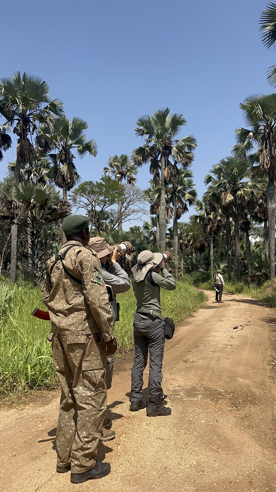

Field Notes
Fresh from the field: birding with patient eyes
A rewarding birding day is built around habitat, timing, quiet observation, and an experienced field team—not a rushed checklist. Uganda’s forests, wetlands, savannahs, and river corridors make it possible to build birding into almost any safari.
Our expanded gallery now combines this new field photograph with wildlife, waterfalls, primates, rhinos, safari vehicles, and national park landscapes.
View the field gallery